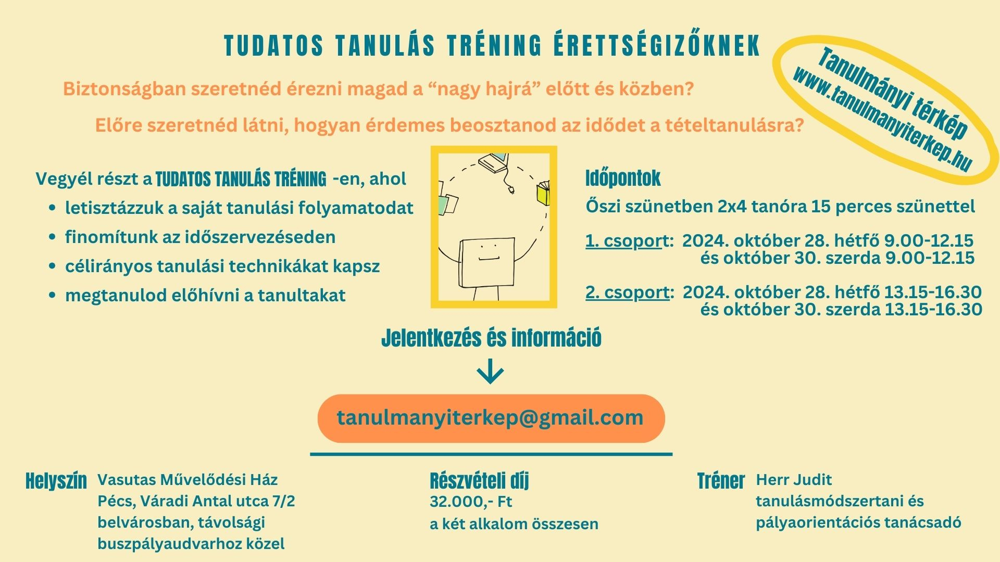

A TANULMÁNYI TÉRKÉP oldal segít Neked hatékonyabbá tenni a tanulásodat, hogy a mérföldköveidet sikeresen léphesd meg.
Ha ebben a tanévben érettségizel, jelentkezz az alábbi tréningre!
A tréning tematikája
I. rész A tanulási folyamat megtervezése és beosztása
Letisztázzuk a saját tanulási folyamatodat, és ...
• megismered, milyen lépésekben jutsz el a tananyagtól a tételig, majd a tétel előhívásáig.
Áttekintjük, hogyan szervezd az idődet az érettségire készülésben. Ez biztonságot ad Neked, mert:
• meg tudod becsülni, melyik munkafolyamatodhoz mennyi előkészülési és tanulási időre van szükséged;
• be tudod osztani mikor, melyik tantárgy mely tételeit tanuld;
• tudod, hol tartasz a tanulásodban és nyomon követed a haladásodat.
II. rész A tanulási folyamat megvalósítása
• célirányos tanulási technikákat ismersz meg
• az előhívási technikával megtanulod az emlékezetedből elővenni a tanultakat.
Ha nem akarod az utolsó pillanatra hagyni a “Hogyan álljak neki?” kérdést, jelentkezz most a tréningre!
Itt tudsz jelentkezniOlyan, mintha a saját térképeden lépkednél. Ezt a térképet Te formálod: magadnak alakítod az utakat.
Csatlakozz Facebook-oldalunkhoz!
Itt tudsz csatlakozniSegítek megtervezni a saját tanulmányi térképedet, hogy lépésről lépésre, tudatosan és célirányosan elérhesd tanulmányi céljaidat.
Herr Judit – Tanulásmódszertani, továbbtanulási és pályaorientációs tanácsadó, mentálhigiénés szakember
Itt szereztem szakmai tapasztalataimat: általános- és középiskolában tanárként, tanárképzésben tanításmódszertan oktatóként, egyetemi oktatóként curriculum- és tananyagfejlesztőként, tanulásmódszertani projektek vezetőjeként és kidolgozójaként.
Ma ebben hasznosítom őket:
• trénerként tanulásmódszertani, pályaorientációs és önismereti tréningeken
• segítőként döntéshozásban: diákoknak és szüleiknek segítek továbbtanulásról döntést hozni (középiskola választás, egyetemi tanulmányok, szakma választás)
• mentorként tanulásban, érettségire tudatos felkészülésben
Itt érsz el:
tanulmanyiterkep@gmail.com
Csatlakozz Facebook-oldalunkhoz!